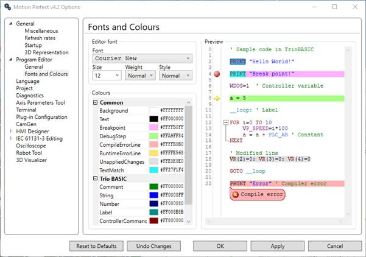

This page allows the user to specify which font is to be used in the editor (including its weight and size). It also specifies the colours used for editing and debugging including syntax highlighting of Trio BASIC programs.